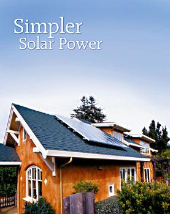
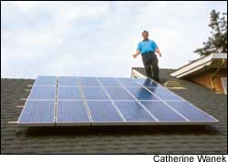

Issue # 210 - June/July 2005
Many of us dream of tapping alternative energy sources so we can live “off the grid.” But you don’t need to unplug from the utility grid in order to use solar panels to produce your own power. For most of us, a simpler grid-tied system is a better choice than an off-the-grid setup. Instead of costly batteries, you can use the grid to “store” your excess solar power. In most states, net metering laws require your utility to credit you whenever your system produces more power than you use. This means that when the sun is shining, your electric meter may spin backwards!
What follows is a guide to grid-tied solar systems - the simplest way to switch to renewable energy for your home.
The most important factor in deciding to install a grid-tied solar system is whether your state or area has net metering. Net metering means the utility will trade electricity with you, giving you credit for any excess power your renewable energy system produces for the grid. When your grid-tied system is producing more than you use, the excess power automatically flows back to the grid, literally spinning your electricity meter backward and adding credits to your account. Net metering is so important that you probably don’t want to consider a residential grid-tied system in a location that doesn’t offer it, unless you aren’t concerned with saving money.
If your area doesn’t have net metering, write your state policymakers urging them to change the regulations.
Many states (37 and counting) do offer net metering. Not all locations have the same regulations, though; go to www.dsireusa.org to learn more about net metering policies in your area. This Web site also is a great source for information about renewable energy rebates and other incentives available in your area.
You should pay close attention to your local net metering regulations because they will affect the sizing of your system. Some states calculate net metering monthly, while others figure it annually. Most home solar systems produce a surplus of power in the summer and run a deficit in the winter, so an annual billing period usually is a better deal.
In many states, any net excess electricity credits you accumulate during your billing cycle can be sold to the utility - but usually at a significantly lower price than the retail rate. So it probably wouldn’t be cost-effective to produce more electricity than you use; the goal is to choose a system sized to produce only the power you think you will use in a given net metering period.
One of the greatest advantages of a grid-tied system is that you can avoid buying a large battery bank. Batteries in a grid-tied system only provide backup power during utility outages. This may seem like a good idea in theory, but the batteries make the system unnecessarily complex, less efficient and substantially more expensive. Batteries also contain hazardous heavy metals and last only for a limited time (they will need replacement about every five years). What’s more, battery-based grid-tied systems take up more space and require more equipment.
A much better tool exists for backup power - a gas or diesel generator. If you expect long power outages in your area, you would want a generator just to avoid having to maintain a large battery bank. And once you have a generator, why have batteries at all?
Photovoltaic (PV) modules (the panels that collect the sun’s energy) come in two main types: crystalline and amorphous (also called “thin-film”). Both cost about the same for quality modules ($8 to $12 per installed watt), but they differ in the way they look and work.
Crystalline modules come in two types: mono and poly. Monocrystalline PV has blue or gray-black cells that don’t completely cover the module face. A white backing usually shows at each cell’s rounded corner, producing a visible pattern that some homeowners find unappealing. Polycrystalline cells are cut into rectangles that completely cover the white background, providing a more uniform appearance. They usually are a sparkly blue color. Both mono and polycrystalline modules are covered with tempered glass in an aluminum frame. Mono and polycrystalline PV perform similarly - your choice likely will be decided on availability, price and personal aesthetics.
Amorphous PV has not been on the market as long as crystalline PV, and the first generation or two did not prove to be durable. Even now, most amorphous modules only carry a five-year warranty, although United Solar Systems’ UniSolar amorphous PV carries at least a 20-year warranty and has maintained good performance after decades of operation. UniSolar’s standing-seam thin-film laminates can be bonded directly onto a metal roof, creating a durable, uniformly dark surface that also is pleasing to the eye. Usually, the thin-film PV can be connected invisibly to its wiring under the roof’s ridge cap.
Amorphous PV requires more space per generated watt than crystalline PV, but it has two significant advantages: High temperatures and partial shading do not affect amorphous PV as much as crystalline. For crystalline PV, electricity production is more affected by shadows; when just one cell is shaded, it blocks the flow of all electricity in that series. UniSolar amorphous PV transfers electricity using a weblike series of connections that bypasses shaded areas.
All PV modules produce less electricity the hotter they become, but the output reduction for amorphous PV is about half as much as it is for crystalline PV. If you use framed crystalline PV, mount the array 3 to 6 inches off the roof so it stays cooler.
The upfront cost for UniSolar’s amorphous PV is high because of the roofing to which it is bonded. But if you are putting amorphous PV on a new structure or are re-roofing an existing structure, then UniSolar standing-seam modules probably are a good choice. As PV production increases, the price of amorphous should decrease to less than crystalline modules.
The only other major component of your grid-tied nonbattery system is the inverter. The inverter changes the direct current (DC) created by the PV into the alternating current (AC) we use in North America. In a battery system, the inverter usually is sized for the maximum potential demand of your home during a power outage - and that typically makes it much larger and more expensive than nonbattery inverters that only have to be sized to handle the power produced by the PV system. The new generation of certified grid-tied, or “grid-interactive,” inverters seems reliable, but you probably should choose a high-voltage DC inverter because they are less expensive to wire. (Low-voltage inverters only are necessary under a couple of specialized conditions, where you have more than three solar arrays, persistent shade or batteries.)
Inverter power ratings refer to the maximum continuous output. As a rule of thumb, the most cost-effective nonbattery grid-tied inverters are in the 2- to 6-kilowatt range.
The time it will take for your system to pay for itself depends on the amount of sunshine in your area; the cost of the system; local electric rates and future inflation; your state’s metering laws; your system’s type and size; and rebates and tax credits. A good installer should be able to work out all these variables for you on paper. Or once you have a system price quote, you can download the spreadsheets www.MotherEarthNews.com/downloads/simplesolar to calculate your approximate payback period and return on investment. “Payback” is the number of years it takes for your electricity savings to equal the system’s cost and maintenance.
If you live in an area where net metering is not available, a solar electric system for your home probably won’t pay for itself during your lifetime, unless the declining supply of coal and oil causes unprecedented increases in the cost of electricity. Your money may be better spent on energy- efficient home improvements.
Once you’ve estimated your system’s kilowatt-hour production (see box at left), you need to determine the cost of your utility electricity. This usually is a flat rate (the national average cost for electricity is almost 10 cents a kilowatt-hour) but some areas, such as California, have penalty-pricing structures in which high-usage households pay more for their electricity. A long-term financial analysis should include an estimated inflation factor for the cost of electricity. The more expensive electricity becomes in the future, the faster your system will pay for itself.
The savings on your electric bill, unlike a stock market investment, will not be taxed. By investing in a solar system, you may get a higher rate of return on your investment than with an average stock market investment. If you are lucky enough to have Time Of Use metering (rates are lower for nights, weekends and off-season usage - available in parts of California, for example), your rate of return will be even better.
Doug Livingston is a former physics instructor who has designed renewable energy systems for a decade. He also is an instructor for the Solar Living Institute in Hopland, Calif. Scott Hollis is an associate editor at Mother Earth News.
Photovoltaic orientation
Changing the PV angle is uncommon - it’s usually restricted to off-the-grid systems in which every little bit of winter sun is more precious than summer sun. For the lower 48 states, any inclination between 5 and 45 degrees will work fairly well. In the absence of shading problems, pointing your PV at any orientation between southeast and southwest also will work nearly as well as due south. Solar-tracking mounts, which automatically follow the daily movement of the sun, rarely are used on grid-tied residential systems.
Backup power from batteries
Batteries reduce the amount of useable electricity your system will produce, as well as make your system more expensive and complicated to install and maintain. “Store” your excess electricity by sending it back into the utility grid for a credit, and if you need power during an outage, buy a generator - they’re cost-effective and probably more environmentally friendly than batteries.
Shading
Crystalline modules usually consist of 36 or 72 cells wired together in a series. If just one cell becomes covered by a shadow, perhaps from a vent pipe or tree branch, it can block the flow of the entire module. Built-in bypass diodes help minimize loss, but a shadow covering just 3 percent of a module can equal up to a 50-percent power loss. If you can’t avoid partial shading, consider amorphous PV because it is not as affected by shading as crystalline modules.
The first step in sizing your solar system is to reduce any unnecessary power usage in your home. By doing so, you can purchase a smaller, less expensive system that will save money on the upfront cost and still make your home more energy efficient. Your local utility can be a good resource for energy efficiency tips, and it often gives rebates for replacing major energy-wasting appliances with more efficient ones such as Energy Star-rated appliances (www.energystar.gov). To reduce your consumption by half is just as good for the Earth as providing half of your energy needs with a solar system - and it’s easier on your pocketbook.
To estimate paybacks or returns on investment, first you need to predict the amount of electricity your PV system will generate. For the simplest systems with fixed PV, minimal shading, reasonably good orientation, inclination and annual net metering, this is easy to estimate. Multiply your local annual “noon sun hours per day” (keep reading) by your PV wattage. Reduce that figure by 15 percent to 30 percent to compensate for less-than-perfect system efficiency. Now divide this total by 1,000 for the total kilowatt-hours produced by your system.
A typical value for “noon sun hours per day” in the Midwest is 4.5. In the Sun Belt, this value is slightly higher (above 6 in some areas of the desert) and in the extreme Pacific Northwest to the Upper Midwest and through New England, the value is about 4 or slightly lower. To find the average amount of sunshine in your area, go to rredc.nrel.gov/solar/old_data/nsrdb/redbook/sum2/state.html. In some locations (California, for example), the electric rates vary with the season.
Power in Mother’s Archive
Mother’s Archive contains 35 years worth of articles highlighting the hard work and creativity that characterizes the back-to-the-land lives of Mother’s readers. To read these articles, including those about solar power listed below, go to www.MotherEarth News.com and click on the “Renewable Energy” link. From there, you can view a list of the most recent articles. You also can scan the whole archive by entering the keyword “solar” into the search function.
December/January 2005, No. 207
“Affordable Super Solar Homes”
August/September 2003, No. 199
“Plug into the Sun”
August/September 2003, No. 199
“Get your Hands-On Solar”
August/September 2003, No. 199
“How to Choose a Solar Installer”
August/September 2003, No. 199
“The Solar Patriot”
August/September 2003, No. 199
“A Simple Solar Solution”
April/May 2002, No. 191
“The Case for Solar-powered Electric Tractors”
February/March 2002, No. 190
“Go Solar, Be Secure”
Before you decide that a solar system is right for you, it helps to calculate the payback period of a potential system. For two examples, let’s look at Mark and Kristin Sullivan’s home in Capitola, Calif.
Because the Sullivans’ home is designed so efficiently, the couple’s total energy use is so low that the house uses less power than most American homes - on average, less than 7 kilowatt-hours a day (kWh/day). In fact, the Sullivans’ power consumption stays within California’s first tier of the penalty-pricing bracket, which means they only pay 11.4 cents per kilowatt-hour for electricity - the lowest possible rate from their utility. In the Sullivans’ region, the second penalty-pricing tier doesn’t apply until their monthly consumption of grid power reaches 19.1 kWh/day in the winter and 10.4 kWh/day in the summer. Because of this, their system payback period will be longer than for a California home with more typical electricity consumption. (Go to www.MotherEarth News.com/downloads/simplesolar for details on calculating seasonal production.)
The following payback analysis assumes a 5-percent annual increase in the price of electricity after the first year. The Sullivans produce about 4.7 kWh/day of photovoltaic power and use about 1.7 kWh/day of grid power sold to them at 11.4 cents a kilowatt-hour. This means the Sullivans’ solar system earns about $196 in the first year [0.114 cents (grid price) x 4.7 kWh/day (PV production) x 365 days (year)].
Now let’s calculate how long it will take the Sullivans to pay off their grid-tied solar system. The total installed cost of the Sullivans’ system was $11,563. Without rebates, tax incentives and grants, the system would pay for itself in the 34th year. But with a $3,992 rebate from the California Energy Commission (www.consumerenergy center.org) and an $861 state tax credit, the couple paid only $6,710 for the system, which reduces the payback period to 22 years. A similar system with batteries would cost about $12,000 after rebates and incentives, and would have a payback of 41 years.
Let’s calculate the payback period for an average California home that consumes 20 kWh/day (almost three times as much electricity as the Sullivans’ home), using the same Sullivan system assumptions, including rebates and system cost. In this case, the average home would rarely step out of the lowest-priced tier during winter (19.1 kWh/ day), but would regularly step into the second and third pricing tiers during summer (10.4 kWh/day).
In winter, the average home’s daily PV production is about 3.8 kWh, which corresponds to 688 kWh over 181 days of winter (short days). Assuming the cost of first-tier grid electricity still is 11.4 cents, the total seasonal savings equals $78 for all winter PV production in the first year.
In summer, the average home’s daily PV production is 5.5 kWh, which corresponds to 1,012 kWh total over 184 days of summer (long days). Because the cost of electricity increases to 17.6 cents per kilowatt-hour for electricity usage from 13.5 to 20.8 kWh/day, the total summer PV production equals $178. This translates into a payback period of about 18 years.
So, how does investing in a solar power system compare with other investment options (such as the stock market)? I find the easiest way to calculate investment returns is on an accounting spreadsheet so I can change economic factors such as system cost, inflation, interest rates and the natural decline in the efficiency of PV panels, which we call the “degradation rate.” (Download my Excel spreadsheet at www.MotherEarth News.com/downloads/simplesolar.)
Let’s look again at the Sullivans’ house, using the system cost and payback figures from the previous section; I have chosen to replace the inverter every 25 years and replace the PV every 50 years. First, let’s assume a reasonable 5-percent electricity inflation rate (national oil prices have increased 4.2 percent annually since the Arab oil embargo of 1973) and an average annual system degradation of 0.5 percent. The Sullivans’ 50-year investment will return a tax-free average profit of 7.5 percent per year. But if we plug in an estimated annual increase in electric rates of 8 percent, instead of 5 percent, then the system will return an annual profit of almost 25 percent. If electric rates rise as much as 20 percent a year, the value of a photovoltaic system skyrockets.
In theory, you are buying 50-plus years worth of electricity. The above calculations assume you didn’t borrow the money to pay for your solar system, but borrowed money comes with an interest rate. Generally, the financial picture for debt-financed PV is unattractive because of high upfront system costs. Remember you have to subtract any loan interest costs from your electric savings.
- Doug Livingston
Sullivan Home Specs
• Array: 18 modules (12 volt/60 watt)
• Solar inclination: 37 degrees
• Inverter: 2,500-watt SMA-America SunnyBoy
• Total rated PV production: 1,080 watts
• Annual output: 1,700 kWh(4.7 kWh/day)
• Average daily power consumption:
6.4 kWh/day or about 2,300 kWh/year
• Grid power consumption: 1.7 kWh/day
• Gross installed cost: $11,563
• Rebates and tax deduction:$3,992; $861
• Adjusted installed cost: $6,710
50-year Return on Investment (ROI)
The main unanswered question in any investment analysis of solar power is how much the cost of grid electricity will increase in the future. Here are four scenarios that assume electricity costs will increase at different rates, from 5 percent to 20 percent per year. No one knows how fast electric rates will climb in response to the declining supply of fossil fuels and increasing environmental controls, but it’s worth noting that the average cost of residential electricity increased 8.8 percent per year in California from 2000 to 2002.
Assumptions for Mark and Kristin Sullivan’s house in Capitola, Calif.:
• Initial expense of $6,710 (after incentives)
• System output of 4.7 kWh/day with a decline in efficiency of 0.5 percent per year
• Initial electricity rate of 11.4 cents/kWh
If electricity cost increases at 5 percent annually, their ROI will be 7.5 percent.
If electricity cost increases at 8 percent annually, their ROI will be 25 percent.
If electricity cost increases at 10 percent annually, their ROI will be 53 percent.
If electricity cost increases at 20 percent annually, their ROI will be 2,130 percent.
|
 Catherine Wanek Kristin and Mark Sullivan's super-efficient solar home in Capitola, Calif. |
 Catherine Wanek Daryl Hutchings of Harmony Solar in San Jose, Calif., installed the Sullivans' array of 18 PV modules that produce 1,700 kWh of electricity per year (4.7 kWh/day). |
|